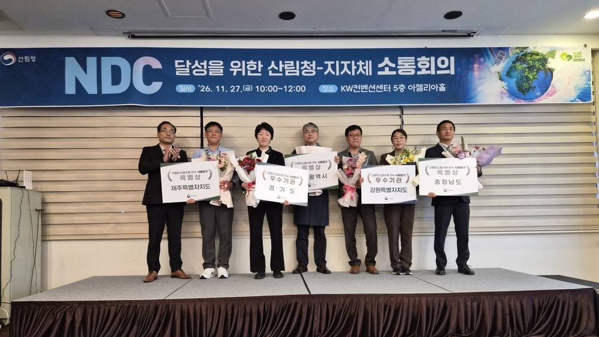
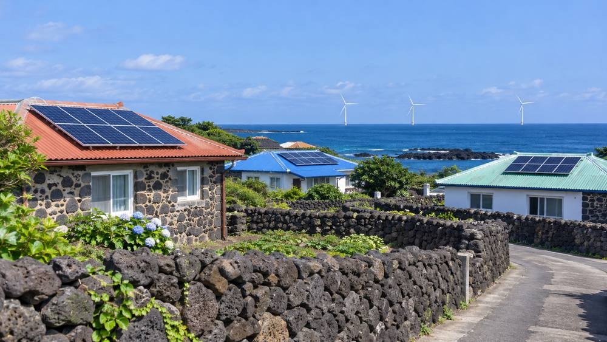
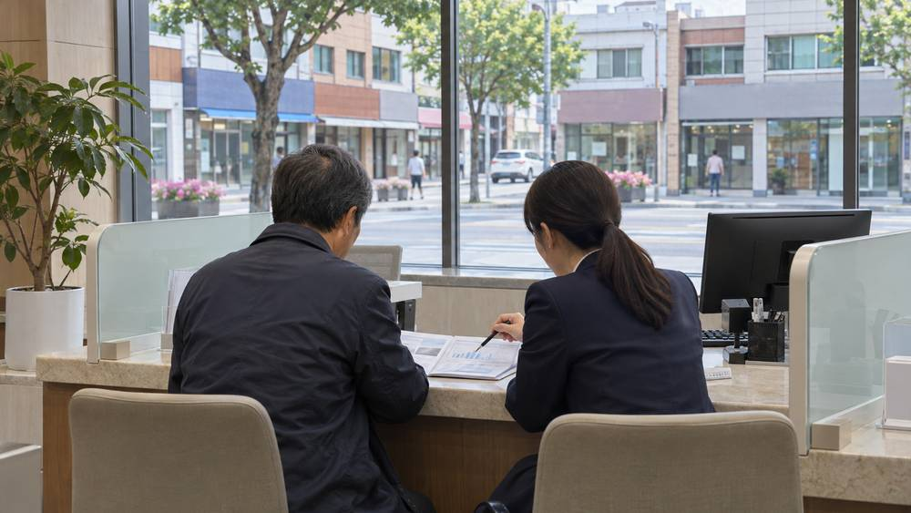

탄소흡수원지수 우수 지자체에 경기·전남광주·강원
산림청이 11월 27일 대전에서 소속기관·시·도 담당자 30여 명과 협의회를 열었다. 2028년 정부합동평가 새 지표 반영 방향도 논의했다.




은행 지역재투자 평가 최우수 7곳, 등급은 상대평가로
금융위원회가 11월 27일 은행 15곳·저축은행 12곳 결과를 확정했다. 서민대출 배점은 15점에서 20점으로 올리고 사회적경제기업 대출에는 가점을 준다.

렌터카 전기차 전환지원금, 2027년부터 렌터·리스도
렌터·리스용 전기차는 지금 구매보조금에 최대 180만 원을 더 받는다. 기후에너지환경부는 제주공항 근처 국·공유지 공동 충전거점 방안도 내놨다.
오늘 주목할 소식
- 내년 RPS 일몰, 태양광은 한전과 20년 계약으로
- 전환금융 모범규준 확정, 중소기업 전략 1년 유예
- 경기 에너지이용합리화 평가 1위, 2년 만에 9계단
- 당진 스마트그린산단 620억, 55%는 에너지에
- ESS 3차 입찰 14곳 1,194MW, 2차의 두 배
- RPS 의무공급량 확정, 1월보다 15만MWh 줄어
햇빛소득마을 더보기 ›
정치 더보기 ›
미래대응기금 지방 몫, 교부세 산식 배분 두고 쟁점
경기도는 불교부단체라 빠질 수 있다며 성장기여도 반영과 8,750억 원 추산을 내놨다. 행정안전부는 일부를 일반재원으로 교부한다고 설명해 왔다.
정책 더보기 ›
한국발전공사법안 발의, 본사 보령·자본금 32조 원
장동혁 의원 등 11명이 11월 24일 냈다. 발전공기업 5곳을 해산해 합치고 정부가 51% 이상 출자하며, 일부 사업은 협동조합에도 맡길 수 있다.
산업·경제 더보기 ›
재생에너지 계약시장 고시안, 11월 27일 설명회서 공개
2027년 1월 RPS를 경쟁입찰 계약시장으로 바꾸기에 앞서 기후에너지환경부가 고시 초안을 내놓는다. 현장 300석은 11월 24일부터 신청받는다.
금융 더보기 ›
제주 폭염 기후보험, 지급 저조에 12월 5일까지 설문
공공 건설현장 일용노동자가 폭염으로 일을 멈추면 시간당 1만7,210원을 주는 보험이다. 제주도는 설문 결과를 2027년 지급조건 개선에 반영한다.
사회 더보기 ›
기후변화 시나리오 첫 산출, 세기 말 1.2~3.6℃ 상승
기상청이 IPCC 7차 보고서용 전지구 시나리오 2종을 냈다. 동아시아는 고배출 때 최대 4.1℃ 오르고, 한반도 표준 시나리오는 2030년에 나온다.
지역 더보기 ›
도봉구 태양광 설치비 지원 수요조사, 12월 11일 마감
2028년 국비 공모 사업으로 설치비의 70~80%를 지원한다. 주택·아파트·상가 소유자가 신청하며 세입자는 신청할 수 없다.
시민에너지 더보기 ›
광주 에너지전환마을 6년, 시민발전소 3,975㎾
광주기후에너지진흥원이 11월 24일 성과를 내놨다. 23개 마을이 참여했고 올해 교육·캠페인 참여 시민은 11만5,000여 명으로 지난해의 2.1배다.